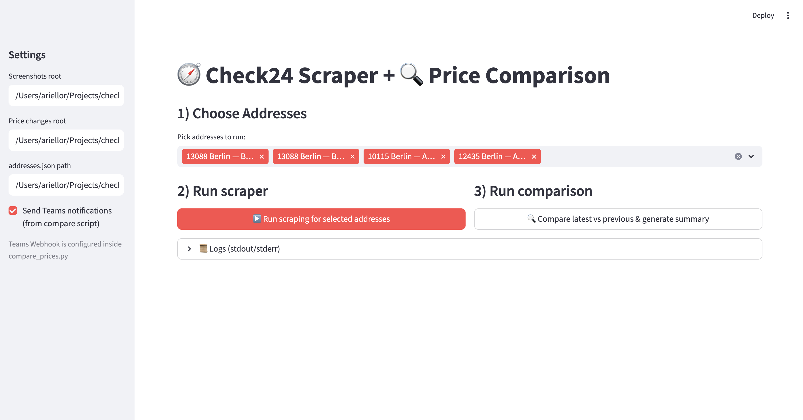

An internal monitoring tool that reduced manual effort and improved competitive reaction speed.
Frequent competitor feature and price changes were hard to track. Monitoring consumed several hours each week across Key Account Management and Data Management, with no scalable internal solution in place.
I built a scraper that captures key funnel steps, compares screenshots over time, extracts product and price changes at address level, and sends alerts to Microsoft Teams via webhook automation.
